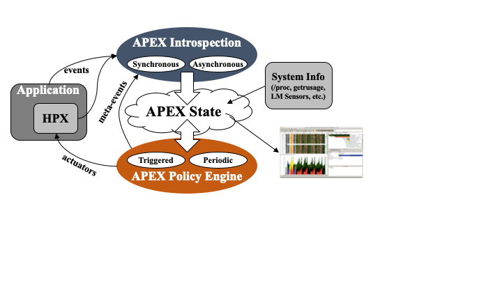

Feature Overview¶
APEX: Motivation¶
Frequently, software components or even entire applications run into a situation where the context of the execution environment has changed in some way (or does not meet assumptions). In those situations, the software requires some mechanism for evaluating its own performance and that of the underlying runtime system, operating system and hardware. The types of adaptation that the software wants to do could include:
- Controlling concurrency
- to improve energy efficiency
- for performance
- Parametric variability
- adjust the decomposition granularity for this machine / dataset
- choose a different algorithm for better performance/accuracy
- choose a different preconditioner for better performance/accuracy
- choose a different solver for better performance/accuracy
- Load Balancing
- when to perform AGAS migration?
- when to perform repartitioning?
- when to perform data exchanges?
- Parallel Algorithms (for_each…) - choose a different execution model
- separate what from how
- Address the “SLOW(ER)” performance model
- avoid Starvation
- reduce Latency
- reduce Overhead
- reduce Waiting
- reduce Energy consumption
- improve Resiliency
APEX provides both performance awareness and performance adaptation.
- APEX provides top-down and bottom-up performance mapping and feedback.
- APEX exposes node-wide resource utilization data and analysis, energy consumption, and health information in real time
- Software can subsequently associate performance state with policy for feedback control
- APEX introspection
- OS: track system resources, utilization, job contention, overhead
- Runtime (e.g. HPX, OpenMP, CUDA, OpenACC, Kokkos...): track threads, queues, concurrency, remote operations, parcels, memory management
- Application timer / counter observation

Above: APEX architecture diagram (when linked with an HPX application). The application and runtime send events to the APEX instrumentation API, which updates the performance state. The Policy Engine executes policies that change application behavior based on rule outcomes.
Supported Parallel Models¶
- HPX - APEX is fully integrated into the HPX runtime, so that all tasks that are scheduled by the thread scheduler are measured by APEX. In addition, all HPX counters are captured by APEX.
- C++ threads (
std::thread,std::async) and vanilla POSIX threads - Using apthread_create()wrapper, APEX can capture all spawned threads and measure the time spent in those top level functions. - OpenMP - Using the OpenMP 5.0 OMPT interface, APEX can capture performance data related to OpenMP pragmas.
- OpenACC - Using the OpenACC Profiling interface, APEX can capture performance data related to OpenACC pragmas.
- Kokkos - Using the Kokkos profiling interface, APEX can capture performance data related to Kokkos parallel abstractions.
- RAJA - Using the RAJA profiling interface, APEX can capture performance data related to RAJA parallel abstractions. Unlike Kokkos, RAJA doesn't give any details, so don't expect much.
- CUDA - Using the NVIDIA CUPTI and NVML libraries, APEX can capture runtime and driver API calls as well as memory transfers and kernels executed on a device, and monitor GPU utilization.
- HIP - Using the AMD Roctracer, Rocprofiler and ROCM-SMI libraries, APEX can capture runtime and driver API calls as well as memory transfers and kernels executed on a device, and monitor GPU utilization.
- Intel SYCL - Using the Intel Level0 libraries, APEX can capture runtime and driver API calls as well as memory transfers and kernels executed on a device, and monitor GPU utilization.
- PhiProf - APEX is integrated with support to intercept PhiProf profiling data. See https://github.com/fmihpc/phiprof.
- StarPU - APEX is integrated with support to profile StarPU. See https://starpu.gitlabpages.inria.fr.
- Distributed Execution over MPI - While APEX doesn't measure all MPI function calls, it is "MPI-aware", and can detect when used in a distributed run so that each process can write separate or aggregated performance data. APEX provides rudimentary support for measuring point-to-point and collectives.
Parallel Models with Experimental Support / In Development / Wish List¶
- Argobots - APEX has been used to instrument services based on Argobots, but it is not integrated into the runtime.
- TBB - The APEX team is evaluating integrated TBB support.
- Legion - No plans at this time.
- Charm++ - No plans at this time.
- Iris - Plans are afoot. Stay tuned.
- YAKL - Plans are afoot. Stay tuned.
Introspection¶
APEX collects data through inspectors. The synchronous data collection uses an event API and event listeners. The API includes events for:
- Initialize, terminate, thread creation, thread exit
- added to the HPX thread scheduler
- added to the OpenMP runtime using the OMPT interface
- added to the pthread runtime by wrapping the pthread API calls
- Timer start, stop, yield, resume
- added to HPX task scheduler
- added to the OpenMP runtime using the OMPT interface
- added to the pthread runtime by wrapping the pthread API calls
- added to the CUDA runtime by subscribing to CUPTI callbacks and asynchronous GPU activity
- added to the Kokkos runtime by registering for callbacks
- added to the OpenACC runtime by registering for callbacks
- Sampled values
- counters from HPX
- counters from OpenMP
- counters from CUPTI
- Custom events (meta-events)
- useful for triggering policies
Asynchonous data collection does not rely on events, but occurs periodically. APEX exploits access to performance data from lower stack components (i.e. the runtime) or by reading from the RCR blackboard (i.e., power, energy). Other operating system and hardware health data is collected through other interfaces:
- /proc/stat
- /proc/cpuinfo
- /proc/meminfo
- /proc/net/dev
- /proc/self/status
- lm_sensors
- power measurements
- counters from NVIDIA Monitoring Library (NVML)
- PAPI hardware counters and components
Event Listeners¶
There are a number of listeners in APEX that are triggered by the events passed in through the API. For example, the Profiling Listener records events related to maintaining the performance state.
Profiling Listener¶
- Start Event: records the name/address of the timer, gets a timestamp (using rdtsc), returns a profiler handle
- Stop Event: gets a timestamp, optionally puts the profiler object in a queue for back-end processing and returns
- Sample Event: put the name & value in the queue
Internally to APEX, there is an asynchronous consumer thread that processes profiler objects and samples to build a performance profile (in HPX, this thread is processed/scheduled as an HPX thread/task), construct task graphs, and scatterplots of sampled task times.
TAU Listener¶
The TAU Listener (used for postmortem analysis) synchronously passes all measurement events to TAU to build an offline profile or trace. TAU will also capture any other events for which it is configured, including MPI, memory, file I/O, etc.
Concurrency Tracking¶
The concurrency listener (also used for postmortem analysis) maintains a timeline of total concurrency, periodically sampled from within APEX.
- Start event: push timer ID on stack
- Stop event: pop timer ID off stack
An asynchronous consumer thread periodically logs the current timer for each thread. This thread will output a concurrency data report and gnuplot script at APEX termination.
OTF2 Tracing¶
The OTF2 listener will construct a full event trace and write the events out to an OTF2 archive. OTF2 files can be visualized with tools like Vampir or Traveler. Due to the constraints of OTF2 trace collection, tasks that start on one OS thread and end on another OS thread are not supported. Similarly, tasks/functions that are not perfectly nested are not supported by OTF2 tracing. For those types of tasks, we recommend the Trace Event listener.
Google Trace Event Listener¶
The Trace Event listener will construct a full event trace and write the events to one or more Google Trace Event trace files. The files can be visualized with the Google Chrome web browser, by navigating to the https://ui.perfetto.dev URL.
Policy Listener¶
Policies are rules that decide on outcomes based on observed state. Triggered policies are invoked by introspection API events. Periodic policies are run periodically on asynchronous thread. Polices are registered with the Policy Engine at program startup by runtime code and/or from the application. Applications, runtimes, and the OS can register callback functions to be executed. Callback functions define the policy rules - “If x < y then...(take some action!)”.
- Enables runtime adaptation using introspection data
- Engages actuators across stack layers
- Is also used to involve online auto-tuning support